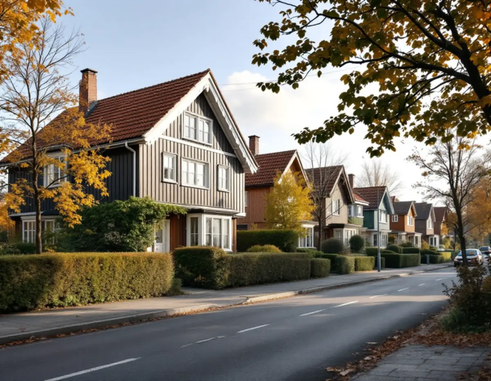
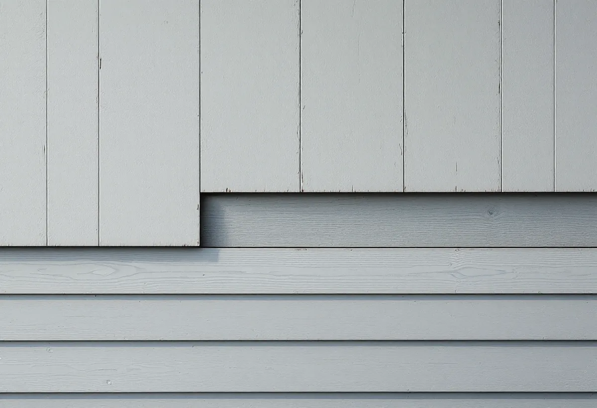

Ritningar och karta
Vi tittar i stadens arkiv och i Stadsmuseets karta för att se husets ursprung.
Hässelby villastad började med arbetare som byggde egna hus på arrenderad mark och fick sedan handelsträdgårdar, sommarstugor och täta grupphus. Därför ser fasaderna mycket olika ut, och ett hus kan ha flera lager av gamla renoveringar. Geal Entreprenad AB renoverar fasader i Hässelby villastad, Hässelby gård, Hässelby strand och övriga Västerort, med gratis platsbesök och skriftligt kostnadsförslag.

Stockholms stad köpte egendomarna Riddersvik och Lövsta 1885 och anlade några år senare en sopförbränningsstation där. Enligt en skrift som BOOM-gruppen vid KTH tog fram åt Stockholmshem 1996 räknas Villastadens födelse till 1893, när några av arbetarna fick arrendera var sin tomt för att själva bygga sina bostäder. Greve Carl Bonde lät sedan stycka av ytterligare 1 000 tunnland.
År 1914 blev samhället municipalsamhälle med namnet Hässelby Villastad, en stadsplan fastställdes 1926 och samma år blev orten köping. På 1920-talet byggdes ett hundratal sommarstugor på Lambarholmen. Inkorporeringen med Stockholm trädde i kraft 1949, och under 1950-talet rådde i princip byggnadsförbud medan staden planerade områdets framtid.
För fasaden betyder historien att två hus på samma gata kan ha helt olika stommar. Ett hus som började som sommarstuga eller som ett egenbygge kan ha byggts till i flera omgångar, och under en senare fasadskiva kan det finnas äldre panel. Vi tar därför bort en bit av beklädnaden på ett dolt ställe innan vi föreslår en lösning.

Stadens strategi Varsam utveckling av småhus- och villaområden beskriver hur många villor i Hässelby villastad under 1960- och 1970-talen ersattes av täta grupper av enhetlig småhusbebyggelse. I skriften från 1996 står att nästan 80 procent av bostäderna då var byggda efter 1970. Stadens områdesfakta för 2025 räknar 5 009 bostäder i småhus av totalt 7 029 i stadsdelen, och de flesta av dem är äganderätter.
Boverket bedömer att asbest sannolikt finns någonstans i byggnader uppförda 1940–1980. Fasader kläddes under 1940- och 50-talen ofta med cementfiberplattor med asbest, som förbjöds på 1970-talet, och fibrer kan frigöras om man borrar i dem. Att riva sådant material på en fasad kräver enligt Arbetsmiljöverket att företaget har tillstånd.
Är det asbest i fasadskivorna planerar vi arbetet så att rivningen görs av ett företag med tillstånd och att den nya fasaden byggs upp efteråt. På ett grupphus syns ett byte i hela raden, så det är bra att prata med grannarna innan materialet väljs. Mer om kulörer finns hos målare i Hässelby.
Boverket beskriver fasadens viktigaste uppgift som att hindra regn från att tränga in i huset. De svaga punkterna är anslutningar mot fönster och dörrar, infästningar av stuprör och skarvar mellan byggdelar. Där behövs tvåstegstätning, så att vatten som kommer förbi det yttre skiktet kan ledas ut igen.
På putsade hus beror putsbortfall enligt Boverket nästan undantagslöst på fukt, och puts som är fuktig över vintern kan frysa sönder. Kalkputs kan suga upp, transportera och avge fukt utan att skada stommen, men bara så länge fuktbelastningen inte blir för stor.
Vid besöket tittar vi därför på fönsterblecken, på hur nära marken panelen eller putsen slutar och på stuprörens fästen. Ska takfoten och hängrännorna ses över samtidigt finns mer under takrenovering i Hässelby.
Stockholms stad skriver att det inte längre krävs bygglov för fasadändringar på en- eller tvåbostadshus om vissa förutsättningar är uppfyllda. Lov behövs om byggnaden eller området är särskilt kulturhistoriskt värdefullt eller om detaljplanen har skyddsbestämmelser. Stadsmuseets klassificeringskarta ger en första indikation: hus markerade med gult eller grått behöver inte lov om inget annat gäller, medan streckade ytor ännu inte är inventerade.
Är du osäker kan du kontakta Stadsmuseet, som brukar svara inom tre veckor efter att ha fått alla uppgifter. I stadens e-tjänst Bygg- och plantjänsten finns detaljplanen och äldre ritningar för fastigheten, som kan visa husets ursprungliga fasad. Mer om panel, puts och isolering står på sidan om fasadrenovering.
Vi tittar i stadens arkiv och i Stadsmuseets karta för att se husets ursprung.
En liten bit av beklädnaden tas bort på ett dolt ställe så att vi ser vad som finns under.
Fasadskivor och fogar i hus från 1940–1980 provas innan de tas ner.
Rivning, nytt material, isolering och bleck redovisas som egna poster.
Den nya fasaden byggs med luftspalt och tvåstegstätning vid fönster och dörrar.
Vi går igenom huset tillsammans och visar vad som har bytts.
Skatteverket räknar byte och reparation av fasader, tilläggsisolering och fasadmålning som rotarbete i ett småhus. Asbestsanering i samband med byggarbetet ger också avdrag, men inte en mätning av asbest som görs för sig.
Avdraget är 30 procent av arbetskostnaden, högst 50 000 kr per person och år och högst 75 000 kr tillsammans med rutavdrag. I en bostadsrätt ger fasaden inget avdrag. Geal drar avdraget direkt på fakturan.
Vad som döljer sig under den nuvarande beklädnaden, om asbest måste saneras, hur stor yta som ska bytas och om huset ska isoleras samtidigt. Ett grupphus med samma fasad som grannarna kan också påverka materialvalet. Du får ett skriftligt kostnadsförslag efter ett gratis platsbesök.
Puts, panel och tilläggsisolering.
Fasadrenovering i Stockholm →Takbyte, takbesiktning och plåtarbeten.
Takläggare i Hässelby →Villastaden, Hässelby strand och gård.
Takrenovering i Hässelby →Styckade tomter, gränser och kartan.
Attefallshus i Hässelby →Källarbadrum, backventil och bostadsrätt.
Badrumsrenovering i Hässelby →Riva, bygga nytt och delad tomt.
Byggföretag i Hässelby →Villastaden och radhusen.
Fasadmålning i Hässelby →Villor, radhus och grupphus.
Fönsterbyte i Hässelby →Radhusen i Hässelby gård.
Fönsterrenovering i Hässelby →Slipa trägolvet – eller lägga nytt.
Golvläggare i Hässelby →Golvet under mattan.
Golvslipning i Hässelby →Villastad, grupphus och radhus i Hässelby.
Målare i Hässelby →Plåttak efter eternit, rännor och beslag i Hässelby.
Plåtslagare i Hässelby →Altan, bod och plank i villastaden och radhusen.
Snickare i Hässelby →Eternit och asbest på taket.
Takbyte i Hässelby →Ny tapet i grupphus och villor.
Tapetsering i Hässelby →Hus som vuxit i omgångar.
Tillbyggnad i Hässelby →Grupphusen, eterniten och ventilationen.
Totalrenovering i Hässelby →